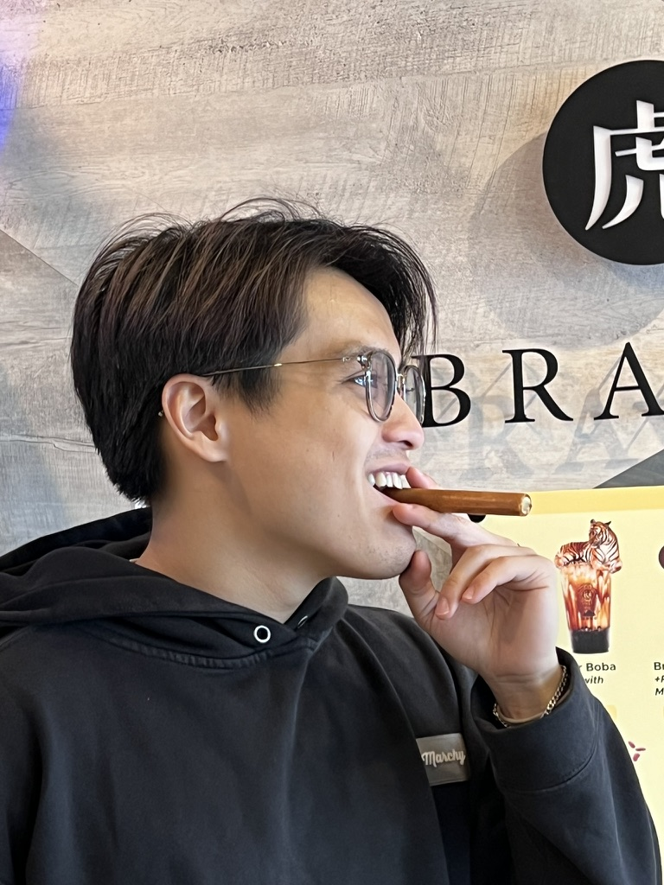

Vu L. Nguyen

Summary
A hardworking student currently pursuing a bachelor's degree in Computer Science and
enthusiastic about learning the field inside and out. Has keen interests in gaining new skills
such as web development or cyber security; Offers strong administrative, relationship-building,
and problem-solving abilities. Actively looking for an internship with opportunities to expand
my knowledge in Software Development with real-world experience.
Curious and friendly with a strong drive to succeed.
Work Experience
EDP - Software Engineer
Travelers Insurance - Hunt Valley, MD
Jun 2024 - Current
- Build cool stuff for insurance company
- Technologies Used: Python, Databricks, Java, Springboot, Various AWS Tools
EDP - Software Engineer Intern
Travelers Insurance - Hunt Valley, MD
Jun - Sept 2024
- Collaborated with a Team in Agile environment to modernize Merge Mania Tool
- Utilized React framework to lead conversion of UI from Angular to React
- Successfully separated froned-end UI from backend services, leading to increased modularity and maintainability of the application codebase
- Leveraged GitHub Actions to implement Continuous Integration and Continuous Deployment (CI/CD) pipelines, streamlining the development and deployment processes.
- Technologies Used: Java, Springboot, TypeScript, React, Git, GitHub, ArgoCD, EKS
A.I Research Intern
MITRE - Baltimore, MD
Aug - Dec, 2024
- Utilized Q-learning Algorithm to develop and simulate a swarm of drones capable of tracking and containing their adversary in a 2D environment.
- Adapted a Reward-Based System reinforcement learning model for deployment, transitioning it from a 2D environment to a 3D setting using Unreal Engine and the Microsoft AirSim API
- Collaborated with an agile team of 4 to implement unit tests.
- Technologies Used: Python, AirSim API, Unreal Engine, RL, ML
Projects
Baltimore Crime Data Visualization
Jan - May, 2023
- Constructed a web application, using Django as a main web framework, to display the Baltimore Crime Map through Leaflet along with different Data Charts from Charts JS to help with data comparison and visualization.
- Technologies Used: Django, GitHub, Git, Visual Studio Code, Bootstrap, MySQL, Leaflet, Chart JS
Election Database
Aug - Nov, 2023
- Implemented a robust MySQL relational database for an election management system, ensuring data integrity and leveraged SQL, Jupyter Notebook, and GitHub for efficient development and collaboration.
- Technologies Used: MySQL Workbench, SQL, Jupyter Notebook, GitHub, Git, Lucid Chart.
Skills
Programming Languages: Python, C++, Java
Web Development: Django, React, Flask, Bootstrap, HTML, CSS, JavaScript, TypeScript
Tools & Technologies: Git, GitHub, VS Code, SQL, Jira/Rally, Gradle, AWS, Databricks
Education
The University of Maryland, Baltimore County (UMBC)
- Baltimore, MD
- Graduated in May, 2024
- Bachelor of Science in Computer Science
- 3.695 GPA
Conestoga Valley Senior High School
- Lancaster, PA
- Graduated in May, 2020
- Highschool Diploma
- 3.8 GPA
Awards and Certification
- AWS Cloud Practioner
- Full Stack Web Development Bootcamp Certification
- Code Path Technical Inteview Preps
Other